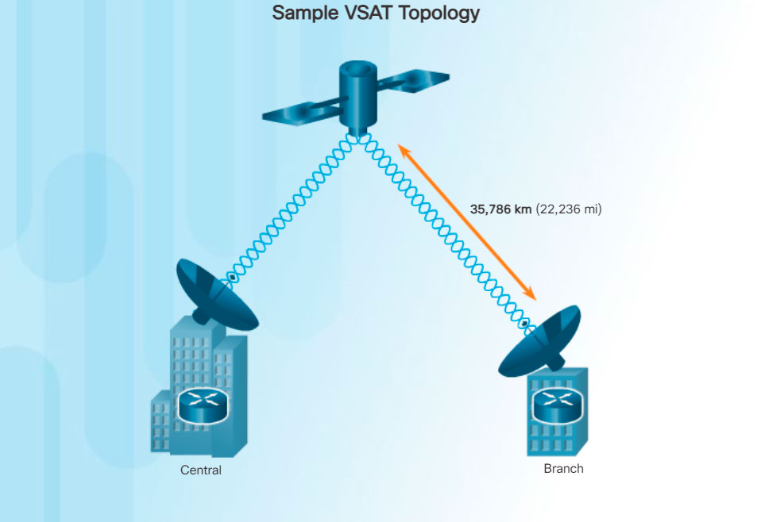

All private WAN technologies discussed so far used either copper or fiber-optic media. What if an organization needed connectivity in a remote location where there are no service providers that offer WAN service?
Very small aperture terminal (VSAT) is a solution that creates a private WAN using satellite communications. A VSAT is a small satellite dish similar to those used for home Internet and TV. VSATs create a private WAN while providing connectivity to remote locations.
Specifically, a router connects to a satellite dish which is pointed to a service provider’s satellite. This satellite is in geosynchronous orbit in space. The signals must travel approximately 35,786 kilometers (22,236 miles) to the satellite and back.
The example in the figure displays a VSAT dish on the roofs of the buildings communicating with a satellite thousands of kilometers away in space.
